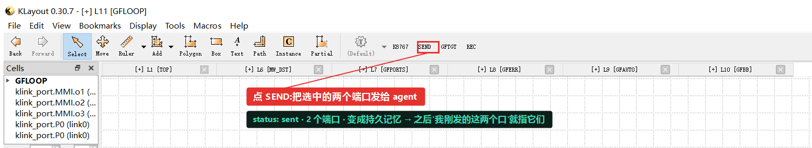

gdsfactory 硅光：三种拿到端口的方式 + 拖动重连
要布线，先得让 klink 知道每个器件的端口在哪。这一篇走三条拿到 klink Port 的路：手绘三角形转换（自定义器件）、标准 gdsfactory 自动端口、PDK 黑箱按 stub 约定 harvest，中间放一个"三角形底边画错"的反面教材；拿到端口后，再走一遍 SEND 选区 → 连线 → 移动器件 → 重新布线的交互闭环。每一步都写清楚：agent 说了什么、调了哪个工具、返回什么结果，配当时的真实 KLayout 截图。
view.screenshot 离屏渲染，只有需要展示工具栏按钮（SEND）那一张是整窗口截图。演示只在一次性 tab 里进行，不碰任何已有工作 tab；用到的是几个普通图层（1/0 波导、12/0 布线、999/99 端口标记），不含任何真实工艺 PDK。本篇全部场景也打包成了可跑 starter：python example_template/photonics/gf_ports.py --port <端口>，拖动器件后 --reroute 只重连不重建（已进 GitHub 仓库，随下个发布版进 pip）。第一部分 · 三种拿到 Port 的方式
手绘端口的约定很简单：一个三角形（3 个点的多边形）就是一个端口——三角形的尖端指向就是端口朝向，三角形的底边长度就是端口宽度。所以底边要和波导等宽（这里 0.8 µm），不能随手乱画。你画的两个三角形底边都正好压在 0.8 µm 波导口上、尖端朝外，标准。下面是转换之前的样子（黄色就是你手绘的三角形）：

然后一次调用把三角形转成标准 klink Port——它读每个三角形的几何，推出朝向、宽度、位置，标成正式 Port，再把原始三角形删掉：

P0 / P1，宽度精确 = 0.8 µm，朝向 180°/0°。因为底边正好压在波导边上，klink 还把它们识别成贴边端口（attached=True），路由时可以沿边滑动。好问题——正因为底边=宽度、尖端=朝向，随手乱画就会翻车。这里在一条 0.8 µm 波导上画一个底边 2.5 µm（比波导宽三倍多）的三角形，转换结果就全错了：宽度被读成 1.95 µm（和波导对不上）、朝向被"长边启发式"带偏成 270°（指向下，而不是朝外的 0°）、而且因为底边压不到波导边，端口是悬空的（attached=False）。


结论：手绘端口时，三角形底边一定要和波导等宽、尖端明确朝外。klink 不会替你猜你想要的宽度——它如实地把你画的几何变成端口。画得准，端口就准。
标准 gdsfactory 器件自带端口定义，就不用手绘了。放置组件时，klink 直接从 gdsfactory 的 Port 对象把端口自动标成 klink Port，位置、朝向、宽度都跟着组件走。一个 mmi1x2 有 3 个口：输入 o1 朝左、两个输出 o2/o3 朝右。

mmi1x2：3 个端口自动标成 klink Port（o1 输入 / o2 o3 输出），宽度 0.5 µm = gdsfactory 默认波导宽。没有一笔手绘。foundry PDK 的黑箱器件不给你 gdsfactory Port 对象，但通常遵守一个约定：在波导层的 cell 边界上放一个个小 stub 方块（一种常见约定是 0.5×0.5 µm 的方块），每个 stub 就是一个光学口。klink 的做法是：你把约定告诉它（波导层是哪层、stub 多大），它就从活的实例几何里 harvest 出端口——端口是派生数据，器件在 GUI 里挪了，重新 harvest 一下就刷新。下面用一个合成的"代工厂风格"黑箱演示（不透明体在 60/0，两个 0.5×0.5 stub 在波导层 1/0）：

SYNTH_BB：按 stub 约定 harvest 出 2 个端口（bb0_0 / bb0_1），朝向从 stub 位置推出。pdk.py 传入，klink 本身不带任何默认。真实 foundry PDK 的黑箱走的是完全相同的这条路，只是把 wg_layer / stub_size_um 换成那家 PDK 的真实值。（本站不发布任何具体 foundry 的 PDK 内容。）第二部分 · SEND → 连线 → 移动 → 重连
拿到端口之后，就能走 klink 的交互闭环了。下面把上面的自定义器件（手绘端口 P0）和一个 gdsfactory mmi1x2 摆在一起，让它们的两个口对着、共一个 net link0，然后连起来、挪一个、再连。
你点 SEND 之后，这次选中的两个端口就进了我的会话记忆，拿到一个持久 id——之后你说"我刚发的这两个口"，我就能准确对应到它们，不用你再报坐标。这两个口都在 net link0 上（左边是自定义器件的 P0，右边是 MMI 的输入 o1）。

SEND（红框为标注）把两个 link0 端口发给 agent。左侧 cell 树能看到 klink_port.P0 (link0) 和 MMI 的三个端口。两个口都在 link0、正好相对，直接布一条波导连上。用 gdsfactory 的 bundle 路由后端，写回 12/0 布线层。这一步之前它们中间是空的（见下图左），布完就接上了（见下图右的深色波导）。

link0 端口相对，中间是空的。
12/0）把两口接上，0 交叉。器件挪了，但刚才那条布线还钉在旧坐标——现在它一端悬空了，和挪走的器件对不上。这就是"刚拖完、还没重新布线"那一刻：布线过期了。（这里用一次有记录的 exec.python 复现"拖动"这个 GUI 动作——只改器件位置，不动布线、不动 net。）

用同一个布线调用重跑一次——它从活的端口位置重新读（P0 这时已经在新坐标上了），把旧布线换成一条跟到新位置的波导。器件挪了，线跟上了，一条平滑的 S 弯接上，其它什么都没动。

验证，不是截图
和核心思路一样，截图是给人看的，真正的完成依据是结构化返回。这一篇里每一步都有可核对的数字：手绘端口转换后 width=0.8（精确 = 波导宽）、反面教材里 width=1.95 / orient=270° / attached=False（如实反映画错的三角形）、自动端口 3 个 / 黑箱 harvest 2 个、连线 length=40 → 重连 length=60、crossings=0。图只是让人一眼看懂，判断成没成看的是这些返回值。
下一步
三种拿端口的方式按场景选：自己画的器件用手绘三角形（记住底边=宽度）；标准 gdsfactory 器件自动就有端口；foundry 黑箱按它的 stub 约定 harvest。拿到端口后，SEND / 连线 / 拖动 / 重连的闭环对三种端口一视同仁。想看一个完整 gdsfactory 脚本被一次接管进这个闭环（含热光 MZI、倾斜光栅耦合器、电学 net），看 gdsfactory MZI 接管教程；想看 agent 把一句话变成器件 / DRC / LVS 的更多实战对话，看 教程页顶部的实战对话案例。